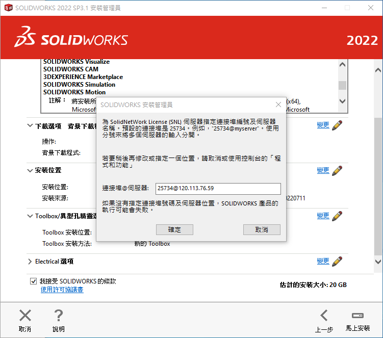

cadlab <<
Previous Next >> 5jtopics1
電腦輔助設計
有關電腦輔助機械設計套件學習流程建議:
- 因為 SolidWorks 是目前全球機械業界使用最普遍的設計與繪圖套件 (估計全球有超過 300 萬名工程師用戶), 因此可以先從 SolidWorks 學起
- 至於與 SolidWorks 同級的 AutoDesk Inventor 與 Siemens Solid Edge (community 版 Siemens Solid Edge - 可攜版下載, 可攜版比較建議在有還原卡或虛擬主機中使用, for @nfu users only) 也有許多業者採用, 因此在學習 SolidWorks 的過程也可以試著利用相似的繪圖概念, 操作相較對教育版使用授權更為寬鬆 (可自由免費使用) 的 Inventor 與 Solid Edge. 看完上述這三套源自美國的 CAD 套件, 也可以試用看看來自中國的中望 CAD 教育版.
- 因為上列中階 MCAD (Mechanical Computer Aided Design) 套件, 除了設計繪圖之外, 都提供常用機械零組件輔助設計的延伸模組 (在 Solid Edge 稱為 Engineering Reference), 或者試著利用 Python API (非正統, 但透過 COM 可以呼叫各種 CAD 所提供的 Windows Type Libraries), 與上述套件進行互動.
- 一旦使用者熟悉電腦輔助機械設計套件建立零組件後, 可以再將學習延伸至 CAE (電腦輔助工程分析), 針對設計環境進行有限元素應力分析或系統的運動 (Kinematics) 或動態 (Dynamics) 分析.
- 對中階 MCAD 有一定認識之後, 就可以將學習觸角伸向高階電腦輔助機械設計套件的應用分析, 例如: Siemens NX (NX2027.3401_lite_cad2022.7z for @nfu users only), 或者是 PTC 的 Creo (有些 MCAD 分類將 Creo 定位為中高階套件), 抑或源自 Dassault 公司的 Catia (目前機械設計系並沒有導入 Catia 與 Creo)
CAD 緣起介紹影片
利用學校電子郵箱申請 onshape 帳號
Onshape 是開發 SolidWorks 的創始者所建立的全雲端電腦輔助機械設計套件 (也可以在手機或平板上利用 Apps 進行繪圖), 目前隸屬於 PTC (也就是 Creo (前身稱為 Pro/Engineer, 簡稱為 ProE) 的開發公司).
SolidWorks 應該是全球銷售數量最多的中階電腦輔助機械設計套件, 目前隸屬於法國 Dassault 公司, 該公司的高階電腦輔助機械設計套件為 Catia.
SolidWorks 是由 Jon Hirschtick 在1993 年創立的。他運用作為 MIT Blackjack Team (決勝 21 點電影) 成員之一所賺到的100 萬美元來創辦了該公司。SolidWorks 首次於1995 年與 Windows 95 同時發布. (source)
interview of Jon Hirschtick, 1, 2, 3, 4, 5
當年 SolidWorks 97 demo 影片
Siemens (西門子) 公司的中階電腦輔助機械設計套件為 Solid Edge (community 版 Siemens Solid Edge - 可攜版下載, 可攜版比較建議在有還原卡或虛擬主機中使用, for @nfu users only), 其高階電腦輔助機械設計套件為 NX.
AutoDesk 公司的中階電腦輔助機械設計套件為 Inventor 可直接從學校網站下載, 該公司還提供教育版的 A360 (可在雲端或近端啟動, 但近端必須安裝對應套件)
中國比較常見的電腦輔助機械設計套件為 https://www.zwcad.com/
台灣在模流分析領域自行開發的電腦輔助機械工程分析套件為 https://www.moldex3d.com/
下載 SolidWorks 2022 安裝檔案 (檔案大小 16GB, for @nfu users only, 請先根據安裝序號與認證主機在校園網路中或透過 VPN (從 ecare 登入申請) 連網, 必須完整安裝結束後, 再進行 service pack 更新)
安裝 SoildWorks 2022 過程畫面 (因為必須在校園內或使用 VPN 認證才能完成安裝, 因此以下直接顯示出 Serial Number 與認證主機 IP 位址):
下載後解開壓縮檔案, 執行 Setup.exe 進行安裝 (以::2 主機的安裝為例):
輸入安裝序號, 以下只安裝基本模組, 並沒有勾選其餘套件:
在安裝過程必須先安裝與序號對應的版本內容後再進行更新, 因此以下使用內定的否, 表示先不下載更新檔案:
勾選接受 SolidWorks 條款後進行安裝:
點選馬上安裝後, 會跳出認證伺服器的視窗表單, 必須輸入正確的認證埠號與 IPv4 位址才可進行安裝, 截至 2023.04.07, 校內的 SolidWorks 認證主機僅支援 IPv4 網路協定認證, 若希望取得認證的電腦僅啟動 IPv6 網路協定, 將無法取得認證授權.

接著按下確定後, 就可以進行漫長且容量達 20 GB 的 SolidWorks 安裝:
安裝完成之前, 會跳出下列視窗, 可以選擇不參加客戶經驗改進計畫, 或許能讓操作過程更加順暢:
最後按下完成鍵就可以執行 SolidWorks 2022 了.
啟動時顯示共有 500 個用戶可以同時連線:
啟動時必須允許 SolidWorks 通過公用網路防火牆:
而且必須接受 SolidWorks 的使用授權:
然後還要進行各模組的資料更新, 以下選擇更新所有模組:
更新完成後, 在開始選單中執行 SOLIDWORKS 2022, 然後同意使用授權:
終於可以使用這個佔用 20GB 硬碟資料的 SolidWorks 了:
cadlab <<
Previous Next >> 5jtopics1